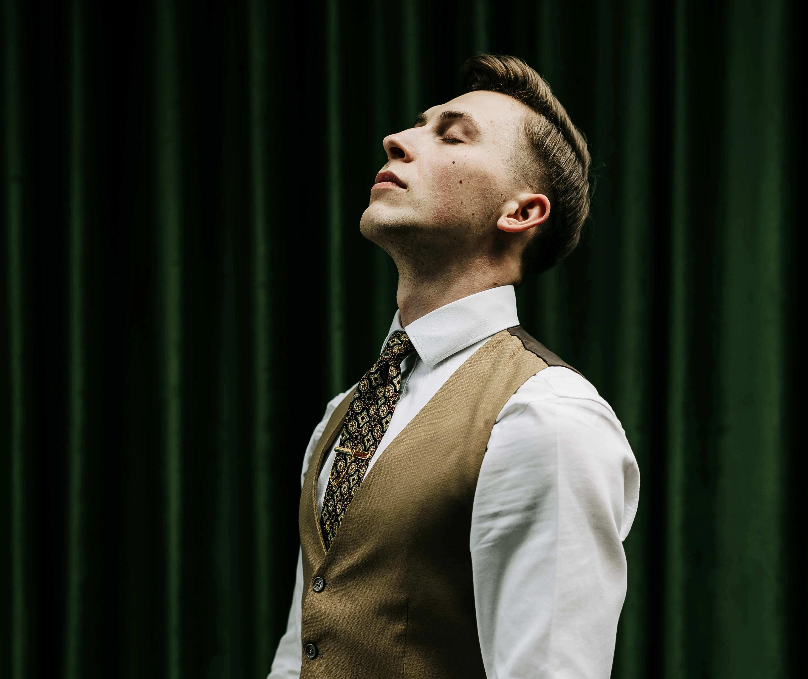
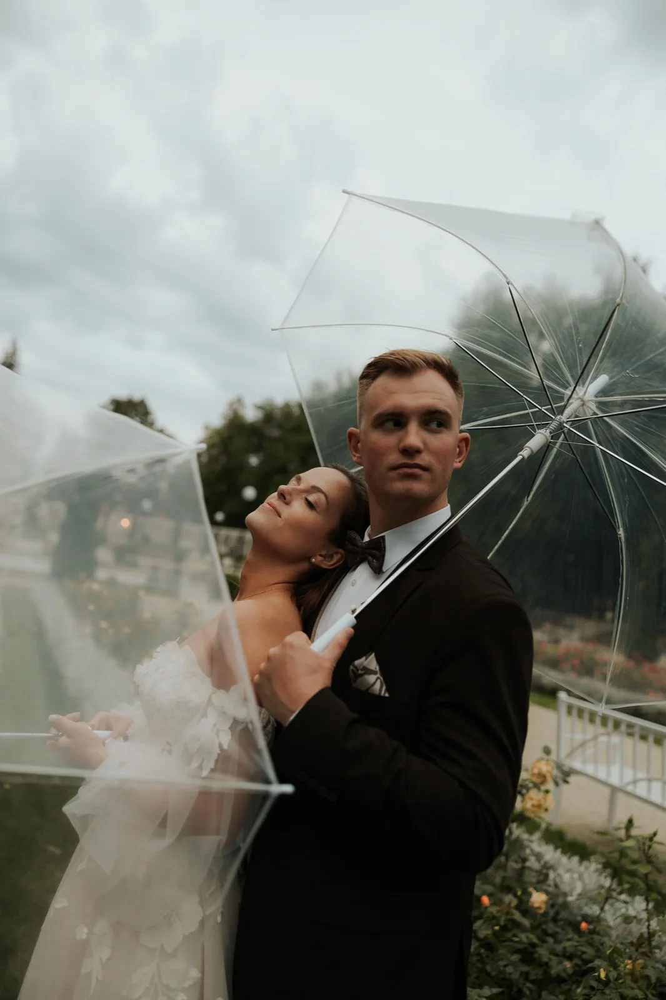
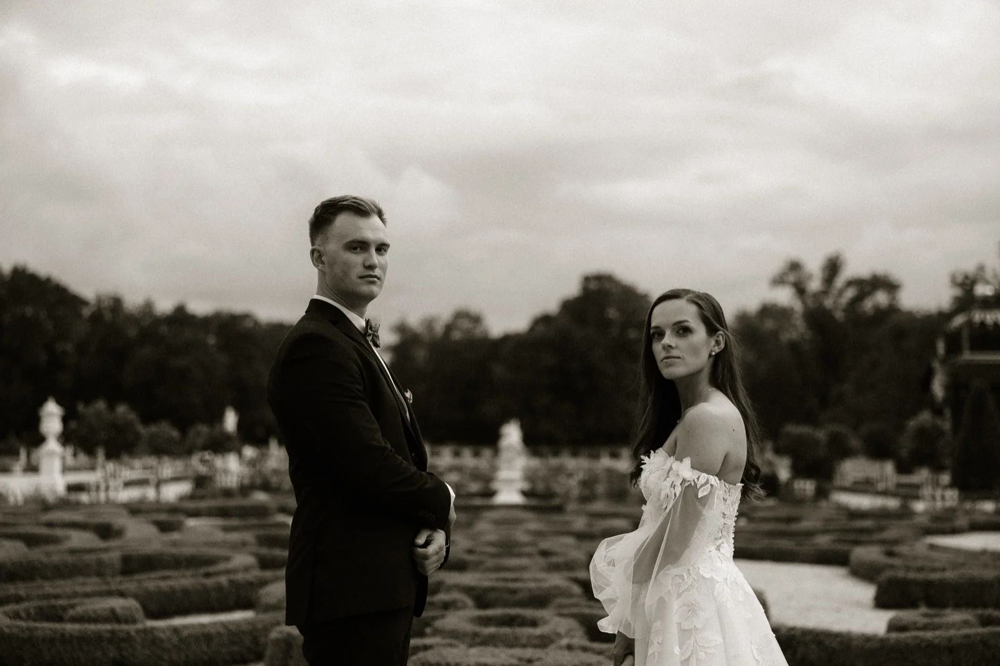
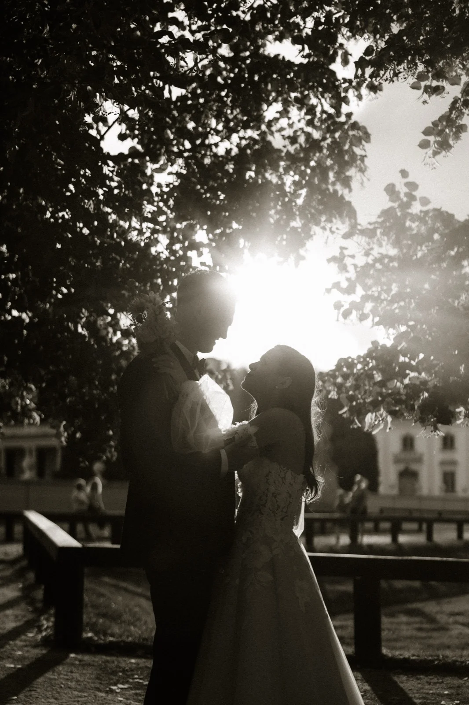
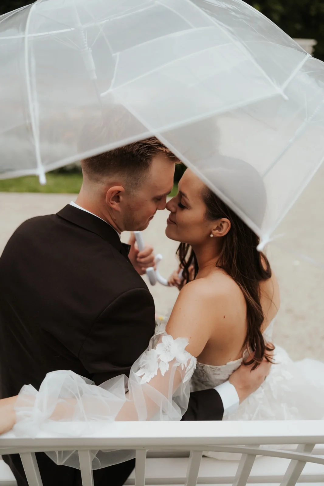
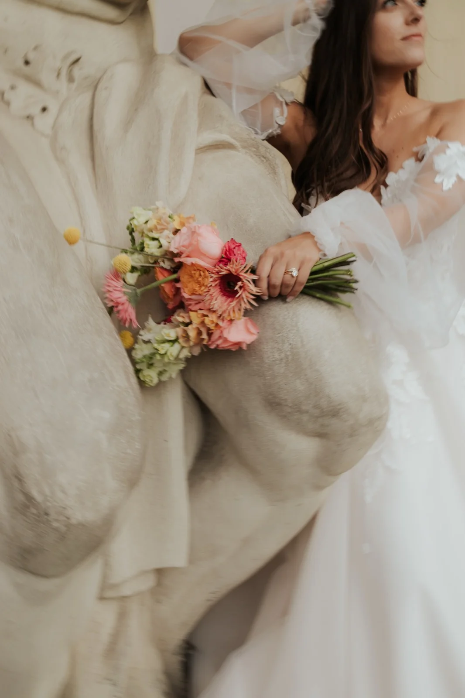

ASPEKT
Konwencja to
tylko sugestia.
Konwencja to
tylko sugestia.

Siemanko, jestem Krzyś. Fotograf ślubny z Białegostoku, pracuję też w Warszawie i wszędzie tam, gdzie dzieją się dobre historie.
Nie szukam idealnych kadrów. Szukam momentów. Tych krótkich spojrzeń, nerwowego śmiechu, uścisków i całego tego chaosu, który składa się na Wasz dzień.
Najlepsze rzeczy dzieją się gdzieś pomiędzy. I właśnie tam najczęściej jestem z aparatem.
Jeśli czujecie, że to może być Wasz vibe, poznajcie mnie trochę lepiej.
WIĘCEJ




WIĘCEJ"Jesteśmy totalnie zachwyceni współpracą z Krzysztofem 🤍 Jest on przede wszystkim człowiekiem pełnym pasji i miłości do swojej pracy. Zdjęcia z naszego wesela są idealne i wymarzone. Krzysztof potrafi uchwycić najpiękniejsze emocje, ma wiele kreatywnych pomysłów. Jest osobą bardzo wyluzowaną, ale również bardzo profesjonalną dzięki czemu nie stresowaliśmy się w dniu ślubu. Potrafi rozluźnić atmosferę swoim podejściem i uśmiechem. Ma doskonałe wyczucie chwili. Zdjęcia są bardzo klimatyczne, niebanalne i ciekawe. Na zdjęciach złapane są wszystkie detale. Krzysztofowi nie straszne jest nawet przeprawienie się na druga stronę Bałtyku i fotografowanie w ciężkich warunkach pogodowych, by zrobić piękne zdjęcia na sesji plenerowej wśród szwedzkich fal 😁 🌊Dziękujemy za najwspanialasza pamiątkę na całe życie i możliwość przeniesienia się znowu do naszego wyjątkowego dnia. Z caaaaalego serca bardzo polecamy wszystkim, którzy szukają idealnego fotografa! 💗"
"Krzysiek, fotograf, ojciec, kumpel... tego człowieka nie da się opisać nawet jednym zdaniem. Przede wszystkim jest pełen pasji i ma ogrom doświadczenia. To widać nie tylko podczas jego pracy czy oglądania efektów sesji - to czuć już w trakcie współpracy 🥺❤️ Bardzo polecamy Krzysztofa! Efekty fotoreportażu z dnia naszego ślubu przebiły oczekiwania o 1000% Byliśmy przekonani, że nie umiemy pozować i jesteśmy niefotogeniczni, okazało to się mylne. Dostawaliśmy na bieżąco propozycje i porady jak się ustawić lub co zmienić 😇 Zdjęcia, które zrobił Krzyś to nie jest zwykła pamiątka... to kadry w których uchwycone są najmniejsze emocje ❤️"